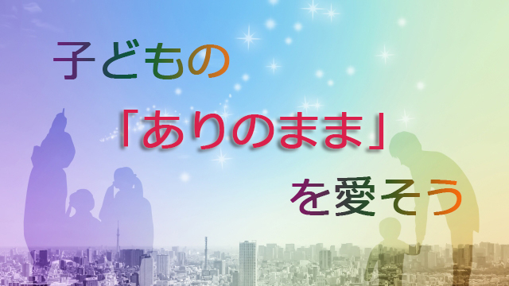

私たちは日頃、心配や不安、怖れといった思考感情に囚われがちです。
あるデータによれば人は一日のうち６万回の思考が頭をよぎるが、そのうち90パーセント以上はネガティブな性質だという。
「あのときああしておけばよかった」「メールの返信がないが何か悪いことを言ったのかな」「明日のプレゼンうまくいかなかったらどうしよう」とか、確かに何かしら不安や心配を感じているのが日頃の私たちではないでしょうか。
現に私もいまこのブログを書きながら「もっとスラスラうまく書けないものか」と苦しみ、そういえば昔から書くのが苦手だったなとか、さらには何十年も前の夏休みの読書感想文が書けなくて困ったことなども思い出し、わざわざそんなイヤな記憶を引っ張りだして自分を責めていたりします。
そう。私たちはこうして過去の失敗の記憶を現在や未来にひもづけて自分の至らなさや不足に焦点を当てさらにマイナスの感情を引き起こしているといえるでしょう。
つまり自らで自らを傷つけているのです。
これがもっとひどくなると私たちは身動きがとれなくなってきます。何か新しいことや意欲的に行動すべきときに機を逸してしまうわけです。
ここで大切なことは、多くのネガティブ感情（思考）は大部分が実際の出来事ではなくほとんどは思い込み（思い過ごし）に過ぎないことに気づくことです。
大部分は過去のちょっとした失敗、それも他人にとがめられたことなどが実際より大きな傷となって連想を広げ、そこから身を守ろうとしているに過ぎないと気づくべきなのです。
いうなればネガティブ思考のほとんどは起こってもいないことへの怖れ心配であり、妄想だということです。
メールの返信が来ないのは相手が単に忙しいだけかも知れません。明日のプレゼンも案外うまくいくかも知れません。
もちろん逆にポジティブ思考さえすれば良いというものでもありません。無理矢理のポジティブも本心を偽っているのであればむしろ逆効果となるでしょう。
とはいえ、やはり妄想的なマイナス感情や思考は先にも言ったように意欲的な行動やチャレンジ精神を損ね、生きる上での幸福感も得にくくする以上できるだけ囚われないよう心がけることは必要です。
ではどうするか。
1つには言ったように、心配や不安は過去からの条件づけであり妄想であることに気づくこと。わき起こる不安や心配はなかなかコントロールできないのでそれと闘わず「すぐに消えていく一時的感情だ」と知って手放すことです。
つまり妄想に執着しないということです。
先の私の「文章下手」のように色々な自らの欠点、不足点にひもづけずまた過去や未来への不安に関連づけず、今感じただけだと正視して手放すということです。
もう１つは、私たちは自分の欠点や弱点にもっと寛容になり自らを優しく労わるべきだということです。
私たちは得てして自分に厳しく当たり過ぎています。
これは子どもの頃から、欠点やささいな失敗ばかり指摘されてきたことと関係していると思います。
私たちは親からも学校の先生からも欠点（不足部分）ばかりを矯正され続けてきました。私たちは「ありのままを認められた」記憶がほとんどないのです。何々ができればホメられる、できなければ叱られるという条件つきの承認しか得られて来なかった。そういう人が圧倒的に多いのではないでしょうか。
だから親も教師も、これからは子どもの「ありのまま」を受け入れるよう努めて欲しいと感じます。それは決してワガママを認めろとか甘やかせと言っているのではありません。
子どもはまず自分は「生きるに値する人間」だと感じることで、自らの素晴らしさ才能を遺憾なく発揮できるものだからです。
欠点（不足部分）を補うことで長所が伸びるのではありません。私はそのことを経験上痛いほど分かっています。
私は我が子に対しても、かつて悪いところを心配して直そうとしていたときよりも「ありのままで良い」と考え直して子育てに取り組むようになってからのほうが、ずっと子どもが生き生きと自らの長所を伸ばすようになったことを実感しました。
子どもの欠点を正そうとする親は、自分がそうしないと子どもがダメになるという根拠のない怖れに囚われているだけではないかと今いちど振り返り、もっと子どもの全存在を認めるよう努めてみてはいかがでしょうか。
「親は子どもの前で本音を話そう」